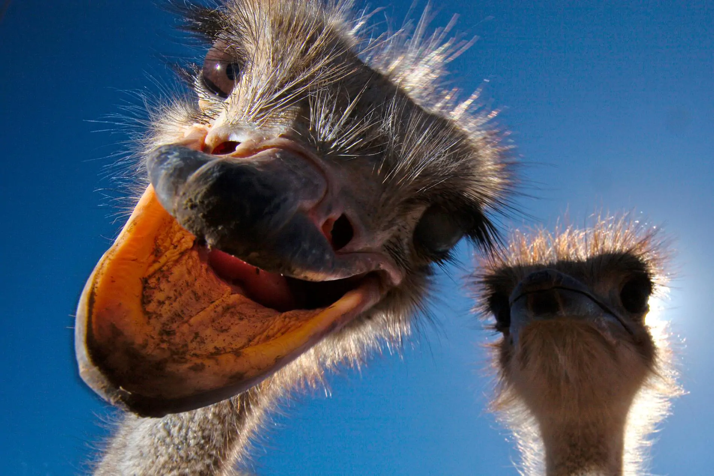

quiz
tá na hora de tu provar que é o bichão e mostrar que sabe tudo sobre avestruzes!
aqui vai um quiz maroto para testar seus conhecimentos, vamos lá:
tá na hora de tu provar que é o bichão e mostrar que sabe tudo sobre avestruzes!
aqui vai um quiz maroto para testar seus conhecimentos, vamos lá: